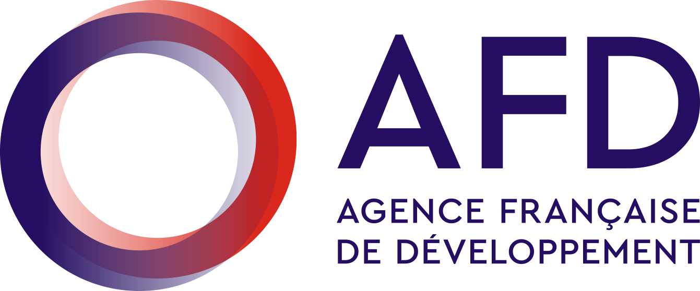

Partners & Funders


An independent pan-African transport think tank publishing rigorous, evidence-based analysis on sustainable mobility, transport equity, and the policies that will determine how Africa's cities, corridors, and communities move in the decades ahead.
Rigorous, independent, peer-reviewed analysis of the most consequential questions in transport policy — from urban design to autonomous systems.
Translating evidence into impact — informing policy at local, national, and international levels through direct engagement with government and public bodies.
Building bridges between researchers, practitioners, and policymakers through conferences, roundtables, and our growing community of transport professionals.
Research Reports
Countries Engaged
Practitioners in Network
Policy Outcomes Influenced
